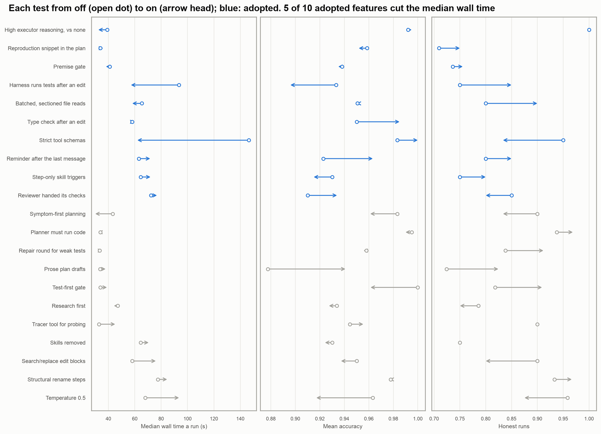

Supplement to “Take the work away from a weak model”
Tables and figures behind What my harness could and couldn’t do for Mercury 2.5. A section number (§) refers to the project’s design log.
Changes adopted
| Changes that passed their rule | |||
| Each against its own same-sweep control | |||
| Change | What it does | What moved | Cost |
|---|---|---|---|
Changes not adopted
| Changes that did not | ||
| Each against its own same-sweep control | ||
| Change | What it does | Result |
|---|---|---|

Each test from the two tables, from the arm without the feature to the arm with it: median wall time a run and mean accuracy. Positions differ between sweeps (different tasks and days), so read the arrows.

Mistakes the method caught
Each would have changed a decision.
| Mistakes the method caught | |
| Each would have changed a decision | |
| What looked true | What it was |
|---|---|
How the setup with Claude changed
| Date | Change | Why |
|---|---|---|
| 19 Sep | build-the-tool and growing-docs-hygiene skills |
The design log was too long to read, and the same analyses were being redone by hand |
| 23 Sep | A session audit; CLAUDE.md cut from 148 always-loaded lines to 47, the rest loading by path; git hooks enforced; project commands moved into the repo | Long context was most of the cost |
| 24 Sep | verify-before-claiming, debug-root-cause, design-before-building, plan-then-execute |
Mercury’s two failures, in Claude |
| 26 Sep | A global CLAUDE.md, with the testing and Python rules taken from this repo | The rules applied to every project |
| 1 Oct | humanizer |
Drafts that read as written by a model |
| 2 Oct | Several sessions in parallel, passing messages, with a code freeze for the release sweep | One session could not run the benchmarks and keep building |
What the Claude Code sessions cost
From harness sessions report, which reads Claude Code’s own transcripts and makes no model call, over 220 sessions and 16,238 API responses, run 4 October:
| Measure | Value |
|---|---|
| Share of cost that is reading the cache | 68% |
| Turns run at more than 400K tokens of context | 48% of turns, 71% of cost |
| Estimated cost with context compacted at 200K | 41-51% of actual |
| Share of context, by tokens times turns carried, that is shell output | 74% |
| Whole-suite test runs, sequential and parallel | 835 (770 min) and 220 (135 min) |
Running other agents safely
To compare my harness with other agents, I ran four open agents locally on the same benchmarks. Each had its own workspace, a spending cap and a list of denied websites, but only Codex ran under an operating-system sandbox, and its mode limits writes, not reads. mini-swe-agent, in runs with three different models, listed my home folder and sent the listing to its model provider as part of its context; nothing was opened, copied or uploaded, and none of these logs is published. Agents with a shell also found later commits in django’s git history and read the fixes, and eleven wins were voided (§118). The setup procedure was written for my own agent, not for four others added late in the project. When the scope of a project grows, the safety assumptions need checking again, and an agent that runs shell commands should start in a sandbox whatever it is for. Every external-agent run since 5 October is sandboxed.
Where the numbers come from
Method §45.4, §46, §56, §61, §112. After-edit check §99. Strict schemas §63.1. Reasoning §53.2. Stall cut §69. Output cap §95.1. Read assists and type check §105.2. Reminder §106.2. Reviewer §108.2. Call-site check §66.1. Reproduction §54.2. Skill triggers §117. Premise gate §57.1. TDD gate §49.1. Prose drafts §60.1. Goal loop §72. Rule placement §82.1. Findings hold §87.2, §88.6. Numeric check §89.4, §89.6. Plan audit §77.2. Planner probe §54.1. Structural tools §62.1. Edit blocks §107.3. Web research §116.1. Tracer §43.1. Diagnosing skill §64. Temperature §82.2. Weak-test repair §46.8. Clarify §92, §101. Skills §117.2. Stronger models §127-127.7, §127.9, §129.4. Mistakes §47, FINDINGS row 15, §107.1, §79.1, §112.1, §106.1, §118. Session numbers harness sessions report, 4 Oct; the earlier audit §50. UI tests §27-28. The watchdog §51. Agent exposure: item 2.8 of TODO.md in the repository.